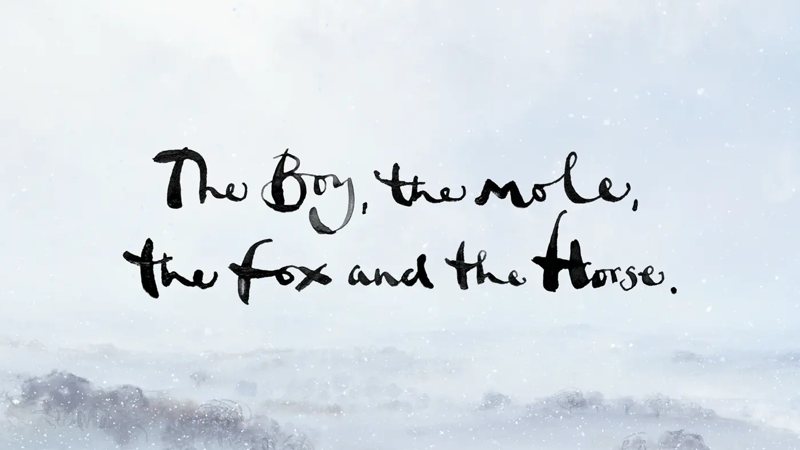
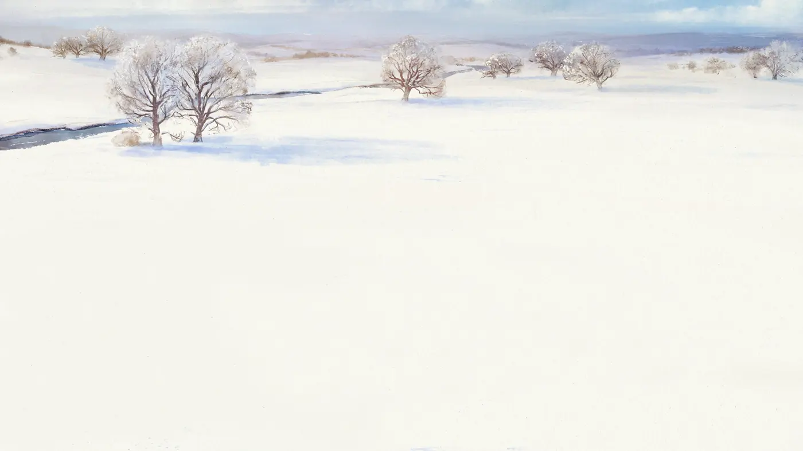
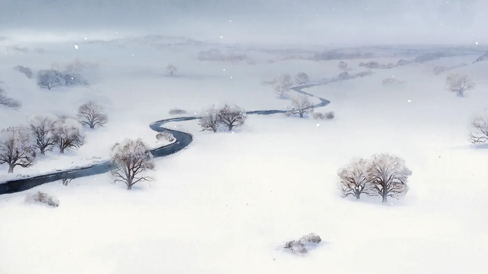

Game · 2018
Red Dead Redemption 2
The reason Sundown Trail exists. The journal, the pause menu and the patience all come from here.
A world that doesn’t need you, which is why you care about it.
These are the games, films, anime and people I keep coming back to, along with the one thing I took from each. You’ll find small nods to most of them hidden around this site. Hover a panel to see it come alive.
Game · 2018
The reason Sundown Trail exists. The journal, the pause menu and the patience all come from here.
A world that doesn’t need you, which is why you care about it.
Game · 2022
Tell the story with the camera at knee height.
Game · 2017
Restraint. A tiny palette and a huge sense of place.
Games · 2013 – 2018
The struggles chapter is named after this trilogy.
The best origin stories are about surviving, not winning.
Game · 2023
Movement should feel good before it means anything.
Game · 2017
The interface can be part of the story.
Games · 2001 –
Style is a score. Earn the S rank.
Game · 2024
Polish is a form of respect for the player.
Film · 1994
Patience is a plan. So is hope.
Film · 1957
One room, one argument, no wasted frame.
Film · 2019
The film grain on this site is a quiet nod.
Black, white and grain can be enough.
Film · 2007
One long take can carry a whole war.
Film · 1999
Every frame can hide something. Make people look twice.
Film · 1979
Hence the green terminal at the bottom of each page.
Competence is the most heroic trait.
Film · 2025
Each version of you gets a little better.
Film · 2025
Broken people can still make a team.
Film · 2025
The mission patches come from here.
Retro-futurism. The future as people once imagined it.
Film · 2026
Starting over isn’t the same as starting from zero.
Film · 2022
Animation that looks painted and moves like a comic.
Film · Disney
Wonder first, logic later.
Animated film · 2019
Fight the fate people write for you.
Animated film · 2020
The brush stroke under the headlines is a nod.
Ink, myth and big empty skies.
Anime · 1999 –
Find your crew and keep sailing.
Anime · 2011
Rules make power interesting.
Anime · 2019
Get back what was taken from you, one piece at a time.
Anime · 2020
Grime and warmth can share a frame.
Anime · 2014
Change from the inside is still change.

Book & film · Charlie Mackesy
People who build quietly
Inspired by people who show up every day and build quietly. A few lines of ink and a kind sentence can carry more than a blockbuster.


Actor · ▶ watch my edit
Design studio
The reason this site looks the way it does: big type, a strict grid and letting the work speak.
Hierarchy is kindness.
Feel the silence.